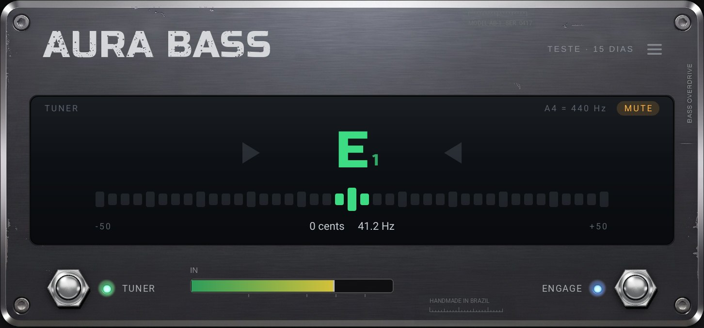
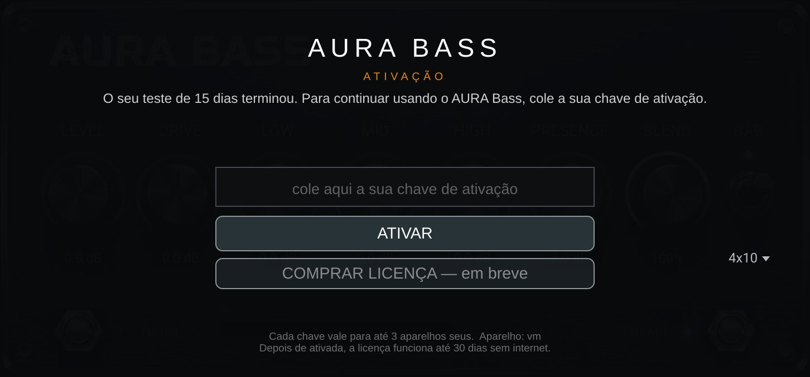

AURA Bass
Todos os seus timbres num painel só.
Limpo, drive, oitava, chorus, caixa e afinador no mesmo lugar — o canivete suíço do baixista. No Windows e no Mac, como plugin ou como programa.
Teste grátis por 15 dias, sem cartão. Uma licença vale para 3 aparelhos seus.

Seis pedais, uma tela.
Pré com drive, equalização, caixa, oitava, chorus e afinador. Sem montar corrente de plugin, sem descobrir no meio do ensaio qual deles está comendo o seu grave. Abre, escolhe o timbre e toca.
Suja sem sumir com o grave.
O caminho limpo e o caminho distorcido andam juntos, alinhados na mesma amostra. O Blend decide quanto de cada um você ouve — e o fundo do seu som continua inteiro.
Oito timbres prontos. Um clique cada.
Do limpo de gravação ao sub grave, passando por oitava, chorus e dois estágios de drive. Cada um é um ponto de partida: gire e o som passa a ser seu.
Nove controles.
Nenhum menu escondido.
Level, Drive, Low, Mid, High, Presence e Blend, mais Octave e Chorus. Tudo à vista, do jeito que se mexe no palco: olhando e girando.
Tudo o que um baixo precisa na frente.
Feito para o palco e para a gravação, sem curva de aprendizado.
Oito timbres de fábrica
Limpo, dois estágios de drive, duas oitavas, sub e chorus já ajustados, no menu do painel. Tira você do zero em segundos.
Drive com blend alinhado
Saturação assimétrica com 4× de oversampling, somada ao sinal limpo sem atraso nem cancelamento de fase. Dá para sujar muito sem perder o corpo.
Equalização de baixista
Grave, médio e agudo com as frequências certas para contrabaixo, mais um controle de presença para o ataque aparecer na mistura.
Caixa de verdade
Simulação por resposta de impulso, com 4×10 e 1×15 à escolha. Pode desligar com um toque quando a sua DAW já tiver a dela.
Oitava abaixo
Divisor de oitava no estilo analógico, que segue a nota e acompanha a dinâmica da mão. Some com o sinal original para engrossar sem embolar o grave.
Chorus
Atraso modulado, lento e discreto, do tipo que dá largura ao som sem deixá-lo desafinado. Bom para partes limpas e para notas longas.
Afinador embutido
Um footswitch transforma o painel em afinador e silencia a saída. Afina entre uma música e outra sem tirar o baixo do cabo.
Medidor e trim
Veja o sinal que está chegando e acerte o ganho de entrada arrastando no próprio medidor. Baixo passivo e ativo ficam no mesmo nível.
Footswitch ENGAGE
Liga e desliga só o drive, mantendo a equalização. Para tocar limpo e sujar na hora certa.
Afinador na mesma tela.
Toque o footswitch TUNER: a saída fica muda e o painel vira um afinador grande, legível de longe, com a nota e os cents.

Instale. Toque. Em minutos.
Instalação e licença.
Do download ao primeiro som em poucos minutos.
Sem internet, o AURA continua funcionando por até 30 dias entre as confirmações da licença.

Especificações
Experimente por 15 dias.
Todos os recursos liberados. Sem cartão.
Neste aparelho (celular ou tablet) o instalador não funciona: ele é para Windows e Mac. Abra esta página num computador para baixar.
Licença completa: em breve. Garantia de 7 dias após a compra.
Se o Windows ou o Mac avisar que o instalador é de um desenvolvedor desconhecido, confirme que o arquivo veio desta página. Windows: “Mais informações” → “Executar assim mesmo”. Mac: botão direito no instalador → “Abrir”.
Dúvidas frequentes.
Funciona no Reaper, no Logic e nas outras DAWs?
Sim. Como VST3 no Windows e no Mac, e como Audio Unit no Mac — o que cobre Reaper, Cubase, Studio One, Ableton, Logic e GarageBand. Também há o programa autônomo, para tocar sem abrir nenhuma DAW.
Preciso de outros plugins junto com o AURA?
Não. O pré com drive, a equalização, a caixa, a oitava, o chorus e o afinador estão todos dentro dele. Se a sua DAW já tiver uma caixa de que você goste, é só desligar a do AURA e usar o resto.
Preciso de uma interface de áudio?
Para tocar o baixo, sim: é por ela que o instrumento entra no computador. No programa autônomo você escolhe a interface na própria tela do AURA.
Posso instalar em mais de um computador?
Sim. Cada chave vale para até 3 aparelhos seus. Para mudar de aparelho, desative um deles dentro do AURA e ative no novo.
O que acontece depois dos 15 dias?
O AURA pede a chave de ativação e para de processar o som até ser ativado. Nada do que você salvou se perde.
Preciso de internet para usar?
Só para ativar e confirmar a licença de tempos em tempos. Depois disso o AURA funciona offline por até 30 dias entre as confirmações.
Posso usar nas minhas gravações e shows?
Pode, sem pagar nada além da licença e sem precisar dar crédito. O som que você faz é seu.
E se eu não gostar?
Você tem 7 dias de garantia: reembolso integral e a licença é desativada.